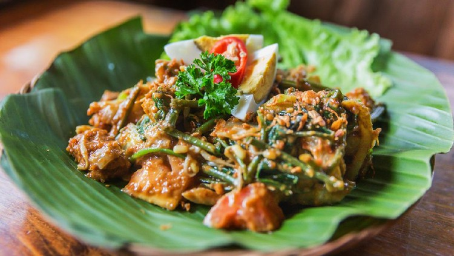
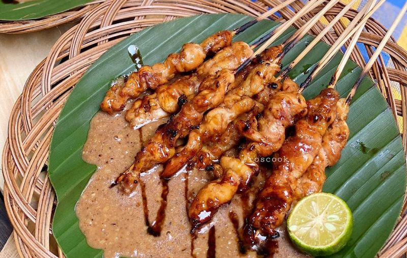
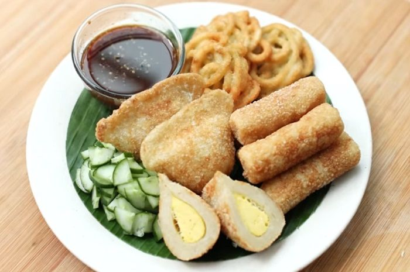

Portofolio

Soto
Soto adalah makanan khas Indonesia seperti sop yang terbuat dari kaldu daging dan sayuran.

Pecel
Pecel merupakan makanan berasal dari pulau Jawa, makanan ini biasanya dihidangkan dengan bumbu sambal kacang sebagai bahan utamanya dan dicampur dengan aneka jenis sayuran.

Sate
Sate adalah makanan yang terbuat dari daging yang dipotong kecil-kecil dan ditusuk sedemikian rupa dengan tusukan lidi tulang daun kelapa atau bambu, kemudian dipanggang menggunakan bara arang kayu.

Pempek
Pempek adalah makanan yang terbuat dari daging ikan yang digiling lembut yang dicampur tepung kanji atau tepung sagu, serta komposisi beberapa bahan lain seperti telur, bawang putih yang dihaluskan, penyedap rasa, dan garam.